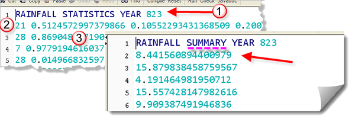

With the FileStats assignment, you learned how to use the Scanner class as an iterator, reading the lines, words and characters inside Moby Dick. In class, you did something similar with Alice in Wonderland. For this homework assignment, you're going to read the lines of a text file and calculate different rainfall averages.
Iterating Over Rainfall Statistics
Complete the program named RainStats.java. As it now
stands, the program writes the output file named rainfall-stats.txt
and places it in your Week03 folder when you run it.
Your job is to complete the program by adding code inside the
summarizeStatsFile() method. Inside the method
you need to open the input file, read each line, and produce
a new output file summarizing the rainfall for each month.

Notice that the input file has:- A title line, in this case, the statistics for the year 823
- 12 lines of samples, one for each month. The first entry on each line is how many days of measurable rain occured in that month.
- The number of samples is followed by one
doublevalue for each sample. In the picture shown here, it rained 21 days in January, so the line has 21 doubles following the word 21. In February, it rained every day, so there are 28 entries. March was especially dry with only 7 entries, and so on.
Your function should open and read the input file and then produces and produce another output file. As shown here, your output file should have a title line with the word STATISTICS replace by SUMMARY. Then, for every month, you should have the sum of all the sample values supplied on that line.
Test your function with the Check program. If you can't solve the
problem, or you run into
difficulty, you may want to watch this video: